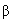
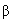
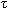

программа для студентов 2 курса физического факультета МГУ
Основные этапы развития физики атомного ядра и частиц. Масштабы явлений микромира.
Опыт Резерфорда. Размеры ядер. Ядро как совокупность протонов и нейтронов. Распределение заряда в ядре. Масса и энергия связи ядра. Стабильные и радиоактивные ядра. Квантовые характеристики ядерных состояний. Спин ядра. Статистические мультипольные моменты ядер.
Закон радиоактивного распада.
Статистический характер распада. Радиоактивные
семейства. Искусственная радиоактивность. Виды
распада.  - распад.
Туннельный эффект. Зависимость периода
- распад.
Туннельный эффект. Зависимость периода  -распада от энергии
-распада от энергии  - частиц. - распад.
Экспериментальное доказательство существования
нейтрино. Разрешенные и запрещенные - переходы.
Несохранение четности в - распаде.
- частиц. - распад.
Экспериментальное доказательство существования
нейтрино. Разрешенные и запрещенные - переходы.
Несохранение четности в - распаде.  - излучение ядер. Электрические
и магнитные переходы. Ядерная изомерия.
Внутренняя конверсия. Эффект Мессбауэра.
- излучение ядер. Электрические
и магнитные переходы. Ядерная изомерия.
Внутренняя конверсия. Эффект Мессбауэра.
Система двух нуклонов. Дейтрон - связанное состояние в n-p системе. Тензорный характер ядерных сил. Зарядовая независимость ядерных сил. Изоспин. обменный характер ядерных сил. Мезонная теория нуклон-нуклонного взаимодействия.
Микроскопические и коллективные модели. Модель Ферми-газа. Физическое обоснование оболочечной модели. Потенциал среднего ядерного поля. Спин-орбитальное взаимодействие. Одночастичные состояния в ядерном потенциале. Коллективные свойства ядер. Модель жидкой капли. Полуэмпирическая формула энергии связи ядра. Деформация ядер. Колебательные и вращательные состояния ядер. Обобщенная модель ядра.
Методы изучения ядерных реакций. Детекторы частиц. Принципы работы ускорителей. Сечения реакций. Каналы реакций. Законы сохранения в ядерных реакциях. Кинематика ядерных реакций. Механизмы ядерных реакций. Модель составного ядра. Резонансные ядерные реакции. Формула Брейта - Вигнера. Прямые ядерные реакции. Оптическая модель ядра. Взаимодействие фотонов и электронов с ядрами. Деление ядер. Деление изотопов урана нейтронами. Цепная реакция деления. Ядерные взрывы. Ядерные реакторы. Реакции синтеза легких ядер. Термоядерная энергия. Трансурановые элементы. Сверхтяжелые ядра.
Взаимодействие заряженных частиц со
средой. Потери энергии на ионизацию и
возбуждение атомов. Пробеги заряженных частиц.
Взаимодействие нейтронов с веществом.
Замедление нейтронов. Прохождение  - излучения
через вещество. Биологическое действие
излучения и защита от него.
- излучения
через вещество. Биологическое действие
излучения и защита от него.
Четыре типа фундаментальных взаимодействия. Константы и радиусы взаимодействия. Принципы описания взаимодействия частиц в квантовой теории поля. Переносчики взаимодействия. Понятие о диаграммах Фейнмана. Основные характеристики частиц. Классификация частиц. Калибровочные бозоны, лептоны и адроны. Фундаментальные частицы. Квантовые числа частиц и законы сохранения. Античастицы. Возбужденные состояния адронов. Резонансы.
Экспериментальные методы в физике высоких энергий. Ускорители. Встречные пучки. Пучки вторичных частиц. Детекторы. Реакции с частицами. Взаимодействия и распады частиц.
Основные свойства электромагнитного взаимодействия. Испускание и поглощение фотонов. Электромагнитное рассеяние лептонов. Взаимодействие фотонов с адронами. Векторные мезоны. Упругое рассеяние электронов Формула Мотта. Форм-факторы нуклонов и частиц.
Классификация адронов. Барионы и мезоны. Супермультиплеты адронов. Странность и другие адронные квантовые числа. Адронные свойства фотона. Глубоконеупругие процессы. Кварки. Глюоны. Кварковая модель адронов. Тяжелые кварки c, b, t. Цвет кварков и глюонов. Потенциал сильного взаимодействия. Асимптотическая свобода и невылетание кварков (конфайнмент).
Основные характеристики слабого взаимодействия. Распады мюона и - лептона. Лептоны и лептонные квантовые числа. Промежуточные бозоны W+, W-, Z. Законы сохранения в слабых взаимодействиях. Слабые распады лептонов и кварков. Нейтрино и антинейтрино. Взаимодействие нейтрино с веществом. Масса нейтрино.
Симметрии и законы сохранения. Пространственная инверсия. Зарядовое сопряжение. Обращение времени. Несохранение пространственной и зарядовой четности в слабых взаимодействиях. CPT - инвариантность. Экспериментальная проверка инвариантности различных типов фундаментальных взаимодействий. CP - преобразование. K0 - мезоны. Нарушение CP- симметрии в распаде K0 - мезонов.
Экранировка заряда в квантовой электродинамике. Зависимость констант взаимодействия от переданного импульса. Объединение электромагнитных и слабых взаимодействий Великое объединение. Поиск нестабильности протона.
Эволюция и состав Вселенной. Реликтовое излучение. Космологический нуклеосинтез в горячей Вселенной. Нуклеосинтез в звездах. Распространенность химических элементов. Нейтринная астрономия. Сверхновые. Нейтронные звезды. Черные дыры. Космические лучи.